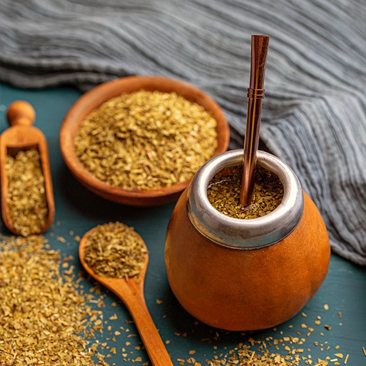
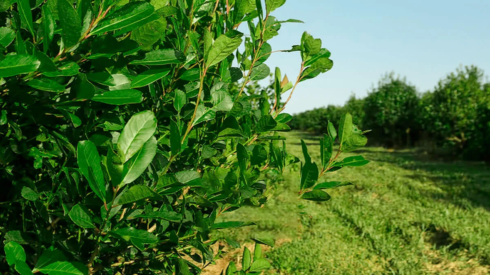

como começou o uso da erva mate
O uso da erva-mate começou com os povos Guarani e Kaingang na América do Sul, que usavam as folhas em infusões como tônico, estimulante e em rituais sagrados. No século XVI, os colonizadores e jesuítas aprenderam o hábito com os indígenas e passaram a cultivar e comercializar a planta, espalhando a tradição do chimarrão, tereré e chá-mate pela região.

A importancia economica da erva-mate no parana
A erva-mate movimenta bilhões no agronegócio do Sul da América Latina, sendo o Brasil um dos líderes em produção e exportação. Geração de Emprego: Sustenta a agricultura familiar em milhares de propriedades no Sul do Brasil. Exportação: Vendida em larga escala para o Uruguai, Oriente Médio (ex: Síria) e Europa. Diversificação: Vai além da bebida tradicional, abastecendo indústrias de energéticos, cosméticos e remédios. Sustentabilidade: Gera valor ao ser cultivada em sistemas que preservam a Mata Atlântica.

o ciclo da erva mata
1. Campo: A muda cresce por 4 anos até a primeira colheita. As podas de renovação ocorrem a cada 18 a 24 meses, preferencialmente no inverno. 2. Indústria: Sapeco: Choque térmico com fogo rápido para reter a cor e nutrientes. Secagem e Cancheamento: Retirada da umidade e trituração grossa dos ramos. Maturação (opcional): Repouso de 6 a 24 meses para sabores mais intensos (padrão uruguaio/argentino). Moagem: Peneiramento e embalagem final.

como ela ajudou no crescimento das cidades
Surgimento de Cidades: Vilas e municípios nasceram nos pontos de parada de tropeiros e ao redor dos engenhos de processamento. Infraestrutura: A necessidade de transportar a produção levou à construção de estradas, caminhos e ferrovias (como a Curitiba-Paranaguá). Modernização Urbana: Os "barões do mate" reinvestiram suas fortunas nas capitais do Sul, financiando casarões, saneamento, iluminação pública e serviços. Crescimento Populacional: A cadeia produtiva atraiu imigrantes e trabalhadores rurais, dinamizando o comércio e os serviços locais.